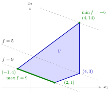

Optima at Extreme Points¶
Proposition¶
Let and , let be a convex domain, and let be given by .
(a) Assume that is a polyhedral convex set with at least one extreme point.
- If has a global minimum value on , then contains at least one extreme point of .
- If has a global maximum value on , then contains at least one extreme point of .
(b) Assume that is nonempty and compact. Then (b1) has at least one extreme point; (b2) has a global minimum and a global maximum on ; and (b3) the sets of minimizers and maximizers are the convex hulls of the optimal extreme points:
and likewise with in place of .
Interpretation¶
The level sets of an affine function are parallel hyperplanes. Minimizing over slides such a hyperplane in the direction while it still meets ; at the last contact it is a supporting hyperplane, and if has corners, the contact set contains one.

The figure is Example 2 below. The level sets of are the parallel lines , drawn for , and ; decreases as the line moves up and to the right, in the direction . Pushed as far as possible in that direction, the line touches only at the extreme point , so is attained there alone. Pushed the other way, the last contact is the whole edge on : the set of maximizers is , as (b3) says, and it contains the two extreme points together with nonextreme points such as . The line passes through the fourth extreme point, , which is neither minimal nor maximal.
The proof makes this precise. Take a minimizer at which and the normal vectors of the binding constraints contain as many linearly independent vectors as possible. If there were fewer than , some would be orthogonal to all of them; moving along keeps constant and the binding constraints binding until a new constraint binds, which adds an independent vector. A blocking constraint exists, for otherwise an extreme point would be the midpoint of . So the minimizer has independent binding constraints and is an extreme point.
Each hypothesis has a job. Part (a) assumes that the optimum exists: the values at the extreme points prove nothing until existence is known (Example 3). Without an extreme point the conclusion fails (Example 4). The condition only makes the level set a hyperplane; a constant is optimal everywhere. In (b), compactness supplies the extreme points (convex hull of extreme points) and the optimum (extreme value theorem), and the optimal set, cut by a supporting hyperplane, is spanned by the extreme points of on that hyperplane.
Applied to a linear program, this is OR Modelling's corner point optimality and the basis of the graphical method. It does not say that every optimal solution is an extreme point: between two optimal extreme points lie infinitely many optimal points that are not extreme (Example 2).
Key Results¶
- On a polyhedral convex set with at least one extreme point, a global minimum or maximum of an affine function, if it exists, is attained at an extreme point.
- On a nonempty compact convex set, an affine function attains its minimum and maximum, and each optimal set is the convex hull of the optimal extreme points.
- Fundamental Theorem of Linear Programming: if a linear program has at least one feasible corner point (a feasible point at which linearly independent constraints are binding, that is, an extreme point of the feasible region) and at least one optimal solution, then it has an optimal corner point.
- Because a polyhedral set has finitely many extreme points, the optimal value is then the best value over a finite list; whether an optimum exists must be settled separately (Example 3 below).
- If is minimal at two different extreme points, it is minimal at infinitely many points, since the set of minimizers is convex.
Examples¶
1. A compact quadrilateral. Let , with extreme points , , and , found with the rank test for extreme points of a polyhedral set. It is compact, so has a minimum and a maximum on . The values at the extreme points are , , and , so , attained only at , and , attained only at .
2. A whole edge of maximizers. On the same , take . The values at the extreme points are , , and . Hence at only, and by (b3) the set of maximizers is , the segment on the line . Its midpoint is a maximizer, , but not an extreme point of .
3. Checking the corners is not enough. Let , an unbounded set with extreme points and , and . Here has a global minimum on , so by (a) . Reading the larger value as the maximum would be wrong: and . If had a maximum, (a) would put it at an extreme point, so it would be ; hence has no maximum on .
4. No extreme point (counterexample). Let , a polyhedral strip, and , so . The minimum is attained on the whole line and the maximum on the line , but has no extreme point: every point of is the midpoint of . So the conclusion of (a) fails: optima exist, but none of the optimal points is an extreme point.
Prerequisites¶
- Polyhedral Convex Set
- Extreme Point
- Extreme Points of a Polyhedral Set
- Convex Hull of Extreme Points
- Extreme Points on a Supporting Hyperplane
- Set of Minimizers of a Quasi-Convex Function
Related Concepts¶
- Corner Point Optimality
- Multiple Optimal Solutions
- Graphical Method
- Extrema of Convex Functions on Compact Sets
- Adjacent Corner Points
- Nonoptimal and Optimal Corner Points
- Possible Outcomes of a Linear Program
Sources¶
- Math VI: Convexity and Optimization · Week 4
- H. E. Nusse and M. Dienstknecht, Math VI: Convexity and Optimization, lecture notes 2026–2027, Section 4.2
Aliases: optimum at an extreme point, optimal extreme point, affine function on a polyhedral set Keywords: f(\boldsymbol{x})=\boldsymbol{a}^{\top}\boldsymbol{x}+b, {\boldsymbol{x}\in D\colon f(\boldsymbol{x})=m}, \operatorname{Conv}({\boldsymbol{x}\in D\colon \boldsymbol{x}\text{ extreme},\ f(\boldsymbol{x})=m}), optimum attained at an extreme point, optimal set is the convex hull of optimal extreme points, existence of the optimum must be checked Symbols: element of, real numbers, subset
Last updated: 10 November 2026 16:43
Optima at Extreme PointsNonoptimal and Optimal Corner PointsPossible Outcomes of a Linear ProgramPolyhedral Convex SetExtreme PointExtreme Points of a Polyhedral SetConvex Hull of Extreme PointsExtreme Points on a Supporting HyperplaneSet of Minimizers of a Quasi-Convex FunctionCorner Point OptimalityMultiple Optimal SolutionsGraphical MethodExtrema of Convex Functions on Compact SetsAdjacent Corner Points